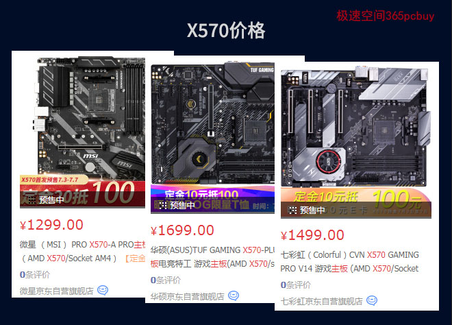
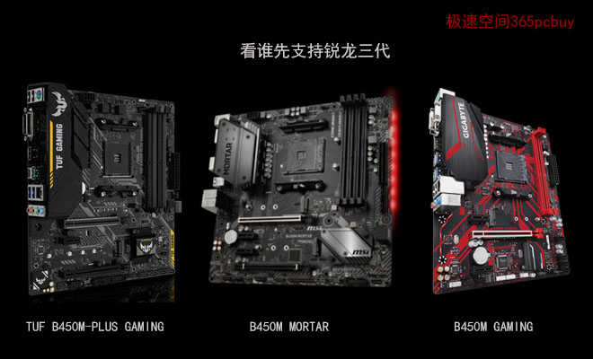
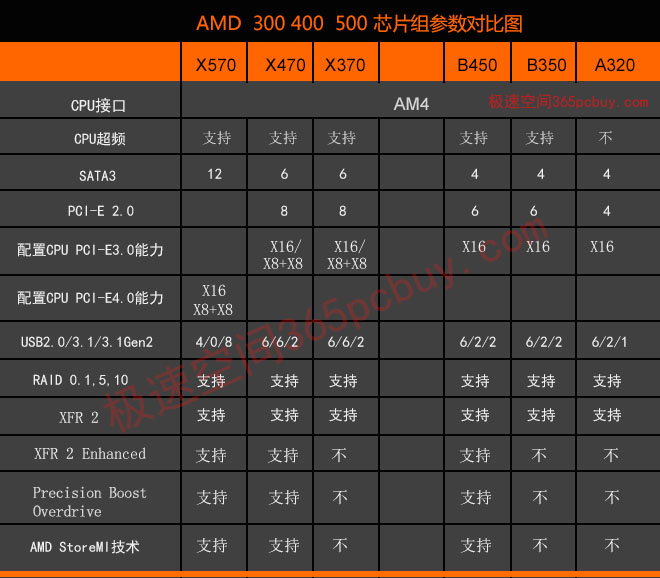
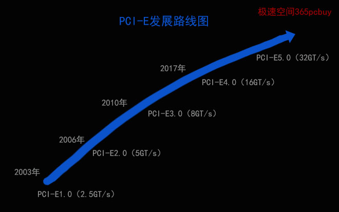
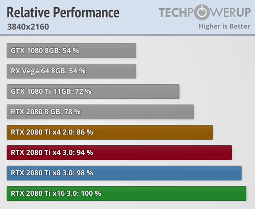

文章标题
发表时间：2019-11-10 文章浏览次数：2165 作者：pc大湿
2019年7月7日，今天，锐龙三代桌面处理器正式上市。
钦定座驾是AMD X570/B550，不过，现在拿起望远镜也看不到B550身影，再看X570（下图），可远观而不可亵玩焉。

一二线品牌少则一千多，高的四五千元，没有低于1000元的型号，这早在意料之中，只要是定位高端芯片组，首批基本上找不到几百的。无论是CPU、GPU还是主板，高阶的型号都是打头阵的，厂家需要先把“兜里有钱愿意尝鲜”人的钞票先赚到手，先卖利润大的，再服务中端消费者。
关注焦点：R5-3600，官方价1599元，即使搭配比较便宜的微星PRO X570主板，一套优惠下来也要2700元，比竞品intel i7-8700还贵，因此为了性价比选锐龙三代+X570，是捡了冬瓜丢了西瓜，没得到实惠。
要享受锐龙三代的【性价比优势】，还需B450M。
截止到今天为止，哪些主板品牌的B450M可以支持锐龙三代呢？

上图是三大一线品牌的中档产品，品牌官网是否提供了新BIOS的查询时间截止到2019年7月6日下午5点
华硕：已支持。 （2019年7月9日查询）
微星：已支持，BIOS版本：7B89v17 发布日期为2019-06-24，由此看出微星还是很积极的，6月份就把新BIOS放出来了。
支持型号有：支持R9-3900X、R7-3700X/3800X、R5-3600/3600X。
技嘉：已支持，BIOS版本：F40。支持R9-3900X、R7-3700X/3800X、R5-3600/3600X。
华擎：已支持。BIOS版本：P3.10
七彩虹：应该支持，但官网没有提供最新BIOS。
映泰： 已经支持，但官网没有提供最新BIOS。
经常有人问二线主板和一线有什么区别，它们没有本质区别，一般情况下，二线主板返修率会高那么两三个百分点（注：此数据未经准确统计，可以大概这么去理解），官网的技术支持也较弱，价格优势较大还是可以考虑。
A320主板暂时乏力
由于锐龙R7-3700X的TDP也只有65W，可以说用A320上R7-3700X是轻轻松松的。但是，请原谅它暂时做不到，这是潜规则。1500元的主板可以赚500元，300元的主板，厂家就算白捡来卖也才赚300元，如果A320能支持，一分不花升级BIOS就用锐龙三代，必然影响B450、X570的销量。A320M目前最多支持到Picasso 3000系列。这并不是锐龙三代，而是”基于ZEN核心架构的第二代APU“，属于ZEN+架构，并不是ZEN2。由于第一代就划分到2000系列（如R5-2400G），第二代自然要采用的3000来命名。
已经买了A320、B350的用户也不必着急，厂商只是“暂时”怠工，后期也会发放福利的。（微星目前已经有A320、B350的beta版BIOS，但有可能出现启动速度降低，最好再等等）
现在买锐龙三代，B450M是个不错的选择，但注意，选购主板一定要让商家刷最新BIOS后再发货。
X570、X470、B450芯片组的区别

注：锐龙3代处理器提供24条PCI-E4.0通道，X570芯片组可以提供16条，并具备配置双8X显卡插槽的能力。
X570和X470、B450相比，实际上是将400芯片组的PCI-E 3.0升级到了4.0版（即：Gen4 PCI-E）
分析X570是否值得买，主要就看这个——PCI-E4.0到底是何方神圣。
相比PCI-E 3.0，4.0版仍然采用128/130编码方式，但数据传输速率翻倍达到16GT/s。

GT/s（传输速率）和GB/s（吞吐量/带宽）换算公式
GT/s：Giga Transmission per second （千兆传输/秒），一秒钟可以完成传输的次数，由于一次传输需要一个周期（1Hz），一个周期只能传输1bit数据，因此，1GT/s表示：1秒钟能传送完成10亿次，共计10亿bit数据。
GT/s和GB/s之间的换算和编码方案有关。
其公式为：
带宽=传输速率X编码方案
由于PCI-E4.0也采用的128b/130b编码方案，因此其X1带宽为：
16X128/130 =15.75 Gbps = 1.97GB/s
PCI-E 4.0 X16的带宽为：1.97X16=31.52GB/s
PCI-E 3.0 X16的带宽为：31.52/2=15.76GB/s
在电脑配件中，对PCI-E带宽的需求量，胃口最大的是显卡和固态硬盘。
PCI-E3.0 X16对付RTX2080Ti绰绰有余
根据国外媒体测试，PCI-E2.0 X16可以100%发挥GTX980显卡的实力，在X8状态下也可以发挥到98%性能，PCI-E3.0 X16则可以轻松对付旗舰卡RTX2080Ti

注：此图来至于techpowerup.com
当采用PCI-E 3.0X8的时候，使用RTX2080Ti会有轻微瓶颈，衰减了2%。由此可以看出，即使用顶级的RTX2080Ti SPUER，PCI-E3.0 X16也是没有任何问题的。
英特尔方面也对PCI-E4.0并不积极，称现阶段PCI-E 4.0对于游戏玩家来说，并没有太大的意义，当前的显卡根本吃不满PCI-E 3.0 X16的带宽。
PCI-E4.0可以组建顶级的SSD阵列
PCI-E 4.0也不是毫无用处，目前已经有厂商发布了支持PCI-E4.0的固态硬盘，如海盗船PM600，官网宣称连续读取速度可达4950MB/s，写入速度可达4250MB/s，这已经超过了当前主流M.2采用的PCI-E 3.0 X4极限带宽，只有PCI-E 4.0 X4这么宽的道路才能满足它横着走的愿望。
总体看来，X570的高成本高价格和锐龙三代的高性价比是互为矛盾的，用R5-3600/R7-3700X+B450M是聪明之选。
有超高预算的用户，也可以看看R9 3950X+微星MEG X570 GODLIKE超神板，它一出世就拳打ROG，脚踢AORUS，提供终身质保，是新一代板王。